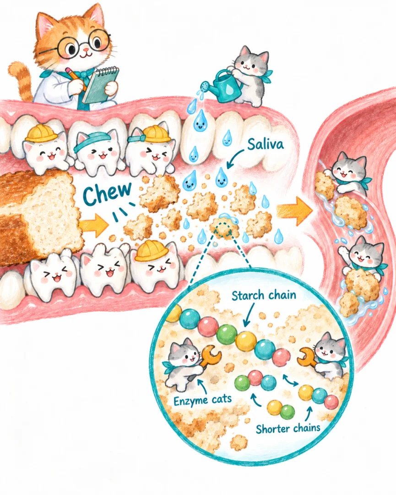
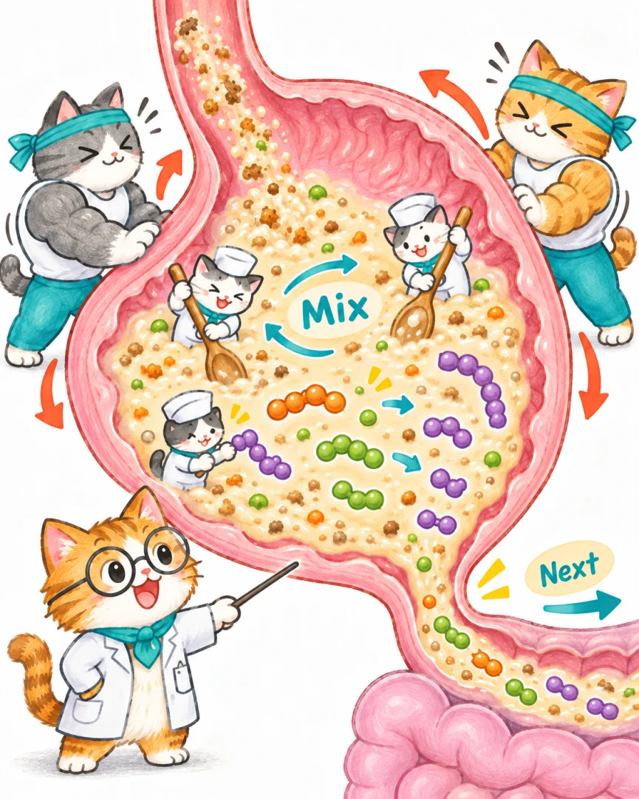
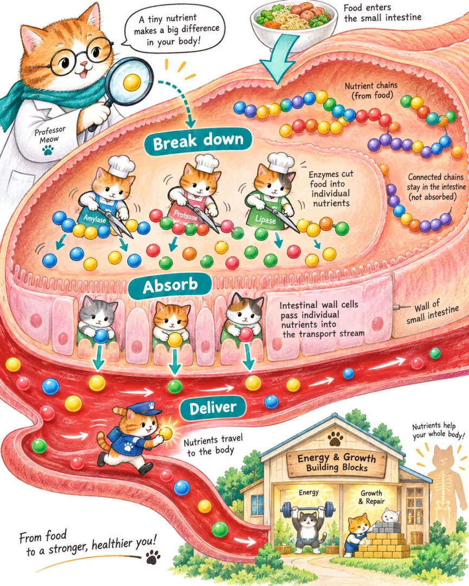
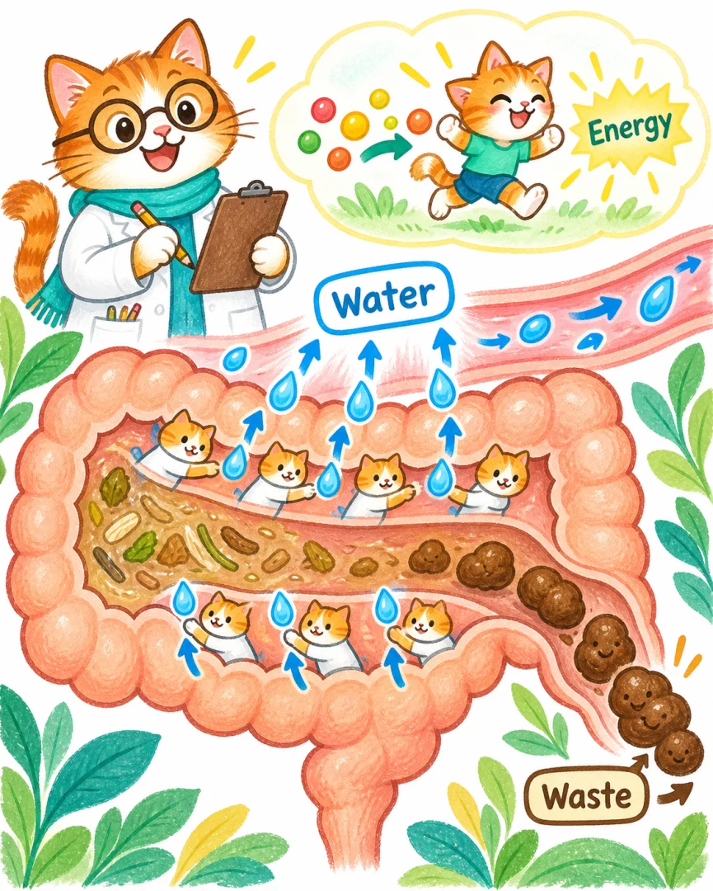
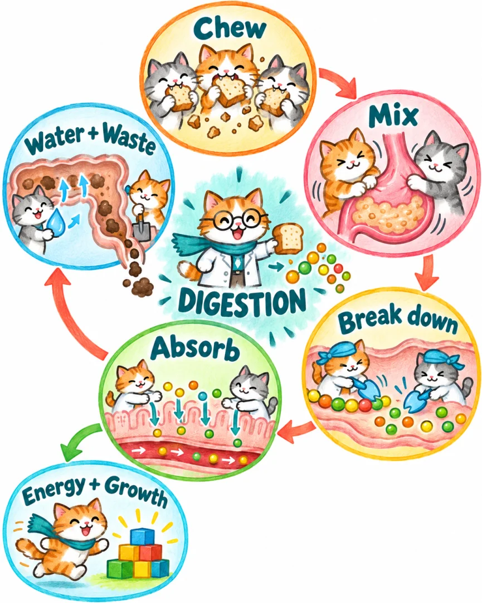

消化
在我们的世界里，那其实是小猫们把食物拆开，让身体接得住、用得上的一场接力。
你注意到了“吃进去以后”
兔兔，你想让超级大嘴花分别吃普通僵尸和巨人僵尸，再看看消化速度会不会不同。
喵博士翻开记录本：“你不只在问它能吃谁，还在问吃进去以后，它在忙什么。这个问题，我们一起追进去看看！”
“大嘴花先留在游戏里。今天，我们跟着一口面包，去小猫身体里探险。”
咔嚓！先变成小碎块
牙齿小猫合拢，再张开。大块面包变成了碎块，口水把它们拌湿。

喵博士把镜头再放大：“小面包屑里面，还有长长的‘营养串’呢！”
口水里住着很小的拆解员，名字叫酶。它们开始把面包里的淀粉长串拆短。
嚼碎，不等于拆完。眼睛看着很小，身体也不一定已经能吸收。
没有牙齿，也能揉一揉
吞咽以后，食道里的肌肉小猫轮流挤一挤，把食物往胃里送。
胃是一个会动的软袋子。肌肉小猫收一收、松一松，把食物和胃液拌在一起。

胃里的拆解员也开工了，把食物中的一些长串拆短。食物逐渐变成糊糊，再一点点送往下一站。
“所以，吞下去以后不是干等着。看不见的地方，正在动，也正在变。”
拆得够小，才能送进去
小肠里的拆解小队接过糊糊，继续把许多营养长串拆成身体能接收的小份。

肠壁小猫把合适的营养接过去。这一步叫吸收。
运输队再把它们送到身体各处：有的帮助供给能量，有的成为生长和修补的材料。
消化是拆开，吸收是接进去。两件事接上力，食物才不只是待在肚子里。
剩下的，也有去处
食物不是每一部分都能被我们的拆解员拆开。剩下的东西继续往大肠走。

大肠小猫接回一部分水。剩下的残渣和其他废物一起，最后成为便便排出去。
“面包不是全变成便便啦！”喵博士指着另一条路，“已经吸收的营养，早就去身体里接着忙了。”
大的，一定更慢吗？
喵博士摆出两条积木长串：“同一种连接，一条短，一条长。如果只有一只拆解小猫，每次只拆一个连接，你猜哪条要忙更久？”
看看喵博士的记录
在每次拆得一样快、每个连接一样好拆的条件下，长串要拆的连接更多，通常要忙更久。
可如果换了材料，或者换了拆法，就不能只数长短了。这是小猫积木实验的预测，不是肚子的计时公式。
还有不用这样拆的伙伴，比如水。水不用先被酶拆开，照样能被吸收。
“所以，真实身体里，不能只看食物大不大，就断定消化要多久。”
大嘴花等待多久，按游戏的规则来；小猫身体里的消化，按身体的规则来。兔兔的实验可以寻找游戏的答案，却不能直接替肚子作答。
食物没有凭空消失

“兔兔，你想到拿两种僵尸来比较，让我们从游戏里的一个问号，追到了一口面包的旅行。”
如果让你给大嘴花设计肚子，你会给它安排哪些小猫？
你可以画出它们工作的地方，也可以发明一个新岗位。喵博士留了一页空白，等着看你的安排。
给共读的大人 · 科学边界与出处
这是一篇“小猫宇宙”故事，不是人体里真的住着小猫。小猫动作分别对应咀嚼、肌肉运动、酶促分解和肠壁吸收。放大画面里的彩珠用于表示营养成分，不能理解为可见的食物颗粒。
正文为一年级共读保留主线：不同营养成分的消化过程并不完全相同；水、维生素和矿物质等无需先被酶拆解。吸收并非单纯按颗粒大小“过筛”。许多营养进入血液，一部分脂类先经淋巴运输。小肠也吸收大量水，大肠不是唯一吸水的地方。
肝脏、胆囊、胰腺也参与消化；胃酸和不同消化酶的细节留待后续。胃排空时间、营养消化吸收时间与整个肠道通过时间不是同一个指标。本文不根据僵尸体型推断人体消化速度，也不建议用吞咽大块食物、暴食或憋便做实验。
科学核对：美国 NIDDK：消化系统如何工作。故事中没有替兔兔编造猜想或观察结果。